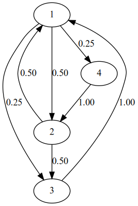
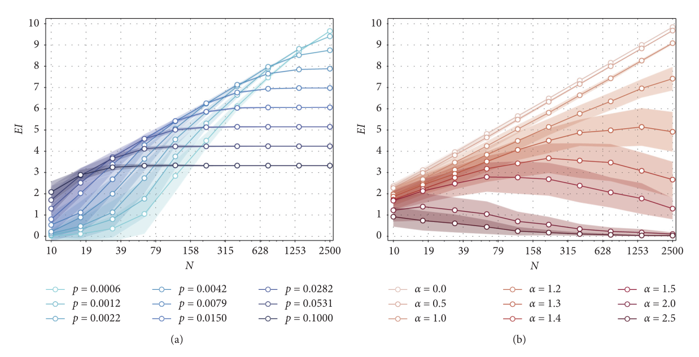
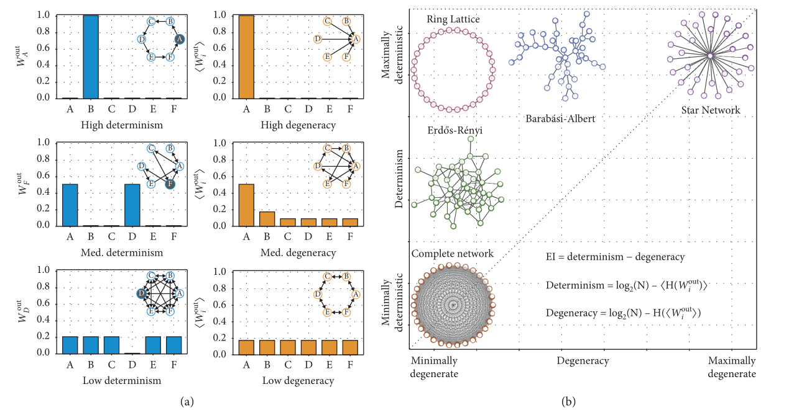
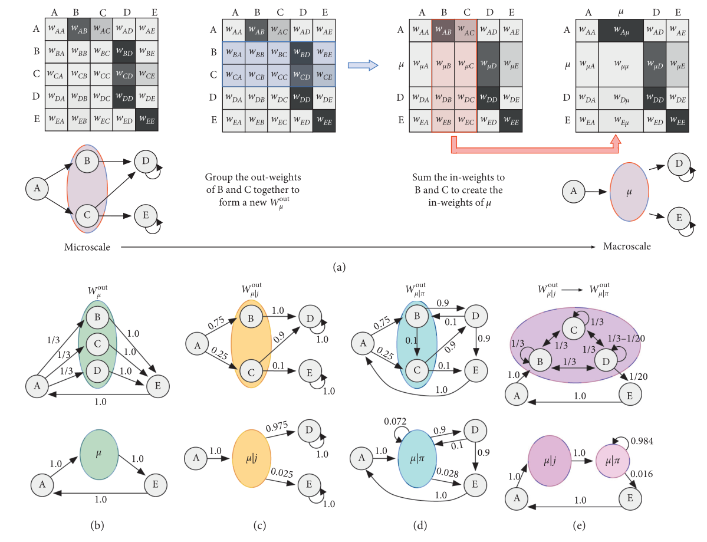
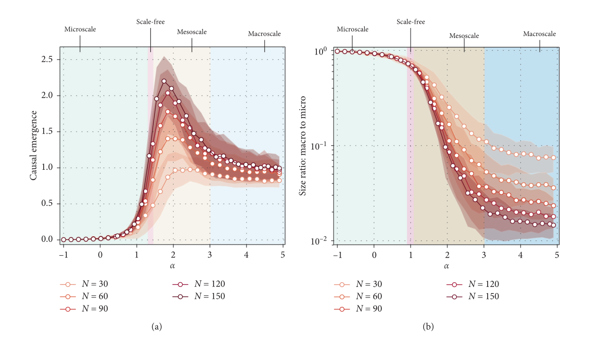

The Emergence of Informative Higher Scales in Complex Networks
Andrew Claros
Graph representation

\[\begin{bmatrix} 0 & 0.50 & 0.25 & 0.25 \\ 0.5 & 0 & 0.5 & 0 \\ 0 & 0 & 1.00 & 0 \\ 0 & 0 &0 & 1.00\end{bmatrix}\]
Out-weight vector:
\(W_{i}^{out}=W_{1}=\langle 0.5, 0.25, 0.25\rangle\)
out-weight summed vector:
\(\langle W_{i}^{out} \rangle= \langle 1, 1.5, 0.75, 0.25\rangle\)
Shannon Entropy
\(\mathcal{H}(X)= -\sum p(x)log_{2}p(x)\)
Shannon Entropy (for each weight)
\(\mathcal{H}(w_{{ij}})= -\sum p(w_{{ij}})log_{2}p(\frac{1}{w_{{ij}}})\)
Average Entropy
\(\langle\mathcal{H}(W_{i}^{out})\rangle=ave(\langle \mathcal{H}(W_{1}^{out}), \mathcal{H}(W_{2}^{out}), \ldots \mathcal{H}(W_{n}^{out})\rangle)\)
Entropy across the network
\(\mathcal{H}(\langle W_{i}^{out}\rangle)\)
Effective Information
\(EI = \mathcal{H}(\langle W_{i}^{out}\rangle) - \langle\mathcal{H}(W_{i}^{out})\rangle\)
Effective Information in random vs preferential-attachment graphs

Determinism vs Degeneracy
Determinism \(=log_{2}(N)-\langle \mathcal{H}(W_{i}^{out})\rangle\)
Degeneracy \(= log_{2}(N)-\mathcal{H}(\langle W_{i}^{out}\rangle)\)
Determinism vs Degeneracy

Effective Information on Real Networks
Applied to real networks from database with maximum of 4000 nodes
Needed to take into account different sizes: effectiveness \(=\frac{EI}{log_{2}(N)}\)
low effectiveness have either high degeneracy or low determinism, or a combination of both
Network Macroscales

Causual Emergence Reveals scale of networks

Thank You!